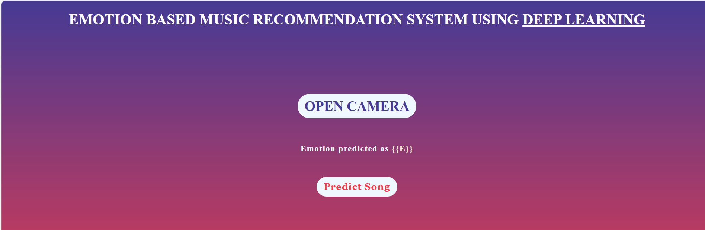

Emotion-Based Music Recommendation System
Developed an AI-based Emotion Music Recommendation System using CNN, Flask, and Spotify/YouTube APIs. achieving 72% emotion detection accuracy with real-time facial recognition and personalized playlist generation.